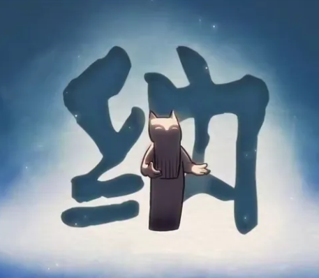
传说修为了抵抗混沌，四处寻觅想要称为京剧猫，志在济世救人的弟子，从而创建了纳宗，所以纳宗的职责就是集中培训、测试有资质的猫，并把通过测试的弟子送入合适的宗派。
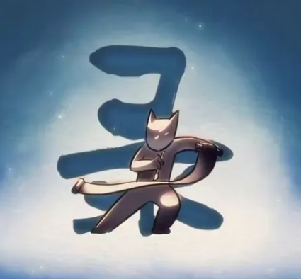
主掌猫土历史的撰记，所有猫土的文献记录，全由录宗管理。
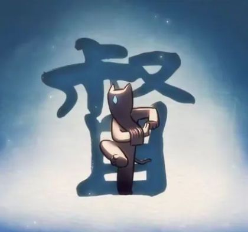
主管督查，目的就是为了监督和制约那些强大的京剧猫们，让他们不会为非作歹。督宗弟子以降魔箱为武器，箱子放出的韵光可以困住犯法之人，并带回督宗查明真相。
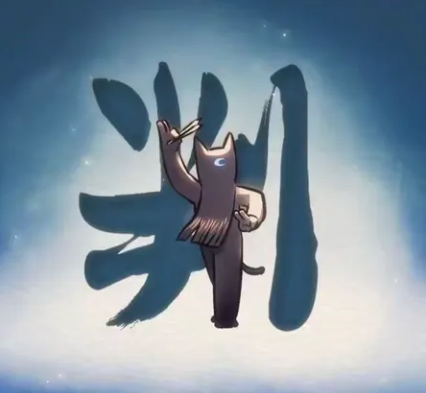
顾名思义，就是执行猫土律法的宗派，判定善恶，并予以惩处。八方利用各自独宗派有的韵力，守护猫土不受混沌的侵袭。
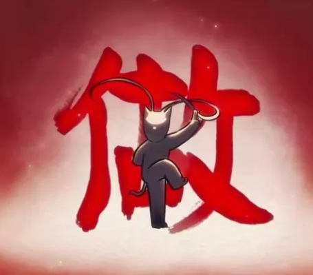
做宗的韵为做之韵， 源自天灵，是掌管强化的韵。 传闻做宗弟子通过最扎实的基本功， 融会贯通， 成为十二宗里唯一拥有强化能力的宗派。 任何招式或法术， 经过做宗子弟的释放，都会变得强大数倍。
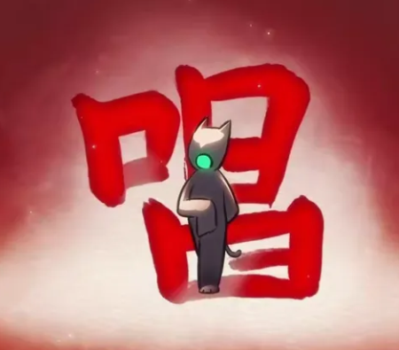
唱宗的韵为唱之韵， 源自咽喉，是掌管气息与音津的韵。 弟子们均以声音作为武器， 能够发出巨大的声波。
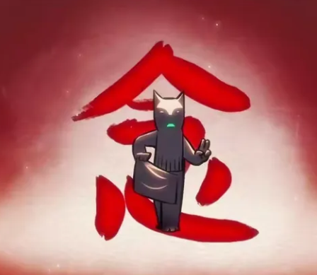
念宗的韵为念之韵， 源自心脏，是掌管情绪以及情感的韵。 念宗是一个神秘的宗派， 据说弟子可以通过特殊的手段， 控制他人的情绪甚至行为。
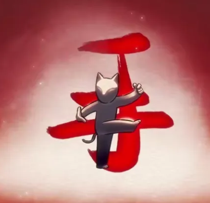
手宗的韵力为手之韵，源自胸膛，是掌管创造的韵。相传，手宗弟子善用韵力，制造各种武器道具，供十二宗使用。
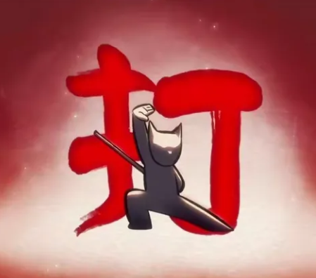
打宗的韵为打之韵， 源自丹田，是掌管精气神的韵。 打宗弟子以体术见长， 更能掌握运用火焰的力量， 净灼混沌。
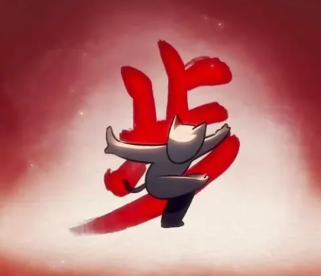
步宗的韵为步之韵， 源自会阴，是掌握速度的韵。 步宗弟子的功夫以步法腿法为主， 腿部的速度和力量惊人， 更能在流沙中如履平地。
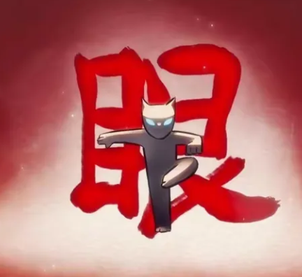
眼宗的韵为眼之韵，源自双目，是掌管视觉与知觉的韵。眼宗的京剧猫精通瞳术，借此迷惑并驱除魔物。
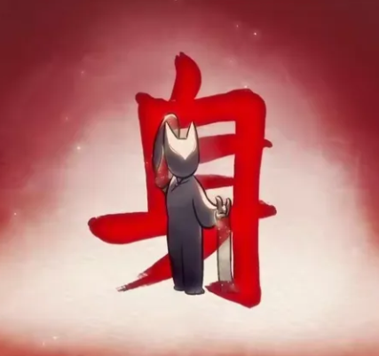
身宗的韵为身之韵， 源自腰间，是掌握变化的韵。 身宗弟子以身法见长， 并能以物化水， 擅长将优美的舞蹈化入招式， 以柔克刚。